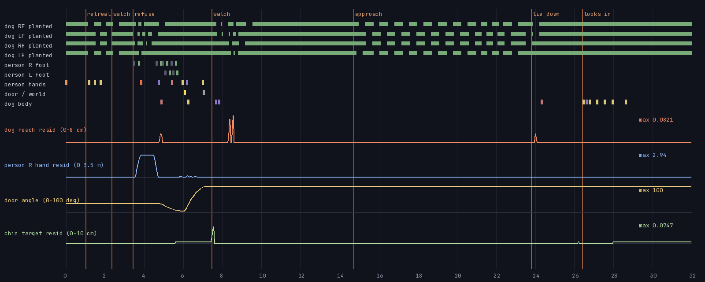

SCION 33 · Inverse Kinematics — Contact and Reach
PAE-02 · the threshold, handmade · cohort 4 · revision r9 (see ledger.jsonl)
- Critic verdict
- Not yet reviewed. The builder does not approve its own work; an independent critic will judge the film against the brief and the SCION bar.
- Next blocking failure (builder's own reading, unverified)
- Reach residual exceeds 1 cm on 2 planted-leg frames (8.50 s RF, 24.0 s) in the turn-back and the lie-down; the dog's head inside the door frame is small in the final shot.
- Invariants
- invariants.json (checker) · trace.json (measured from the render, onsets in summary)
- Contact timelines and error curves

contacts.json · residuals.json · assertions.json · solver_compare.json · sound_levels.json- Method, assets, attempts
- method.md · assets.json · ledger.jsonl · build/make.sh
- Recoverable checkpoint
- The film is rebuilt from the score by build/make.sh; no git checkpoint was made (the brief forbids running git).